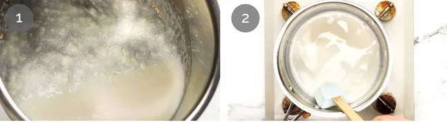
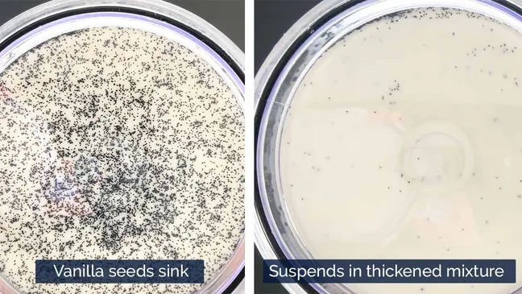
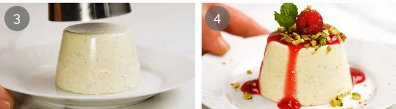

What Panna Cotta taste like
Panna cotta tastes smooth, creamy, and luxuriously soft. The flavour is gentle and lightly sweet, with a clean milk-and-cream taste that feels rich without being heavy. Hints of vanilla add warmth and depth, making it comforting and elegant at the same time. Its silky texture melts on the tongue, creating a delicate, almost cloud-like mouthfeel.

Ingredients for Panna Cotta
Gelatine - I prefer powder over leaves for the ability to use a precise amount to get the exact quiver-wobble texture I want. I also find that the setting strength of gelatine leaves can vary from brand-to-brand and country-to-country. Gelatine powder is a sure thing.
Milk and cream - A combination provides the ideal mouthfeel - creamy richness from the cream but it's lightened with milk so it's not too heavy. I use heavy/thickened cream but you can use what you want, as long as it's pourable (not the thick dollop type).
Caster sugar (superfine sugar) - Just 1/4 cup across 6 servings, which is plenty sweet for me. I've seen recipes calling for double the sugar - far too sweet for me! Caster sugar has finer grains so it dissolves easily, but if you only have regular sugar, that's fine too. It will just take a little longer to melt.
Salt - Just a pinch brings out the vanilla flavour.
Vanilla choices: vanilla bean paste, vanilla extract,vanilla bean(whole pod)

How to make Panna Cotta
Bloom gelatine - Sprinkle gelatine powder over 1/2 cup cold milk in a small saucepan, stir, and let stand for 5 minutes to swell and become lumpy.
Melt gelatine – Put the saucepan over medium low heat and warm the mixture so the gelatine melts and the mixture turns into liquid, lump-free milk again.

Dissolve sugar - Add the sugar, vanilla of your choice*, a pinch of salt and the milk. Mix just until the milk warms up enough for the sugar to dissolve (rub between your fingers to check) then remove from the stove. Don't warm the milk up too much else it will form a skin when it cools.
Bloom vanilla flavour + add cream - Remove the saucepan from the stove. Let it sit 10 minutes (to draw out the vanilla flavour) then stir in the cold cream. This will bring down the temperature and help speed up the next steps.

Fridge before pouring - Pour the mixture in a jug or bowl (preferably a clear one, so you can check for sinking vanilla seeds). Then refrigerate for 1 hour, stirring well at the 30 minute and 45 minute mark, scraping the sides (to ensure it doesn’t start setting), until the mixture has a consistency like thickened cream (heavy cream) so it's thick enough to keep the vanilla seeds suspended rather than settling on the base - see photo below for before and after.
WHY I REFRIGERATE -This step makes the mixture thicken enough for the seeds to remain suspended as the Panna Cotta sets in the moulds. If you skip chilling, all the seeds will settle on the base of the mould.
Lightly grease moulds - Give the moulds a quick spritz of a neutral flavoured oil then lightly wipe with a paper towel. This will let your Panna Cotta slip out without dipping in warm water.

Pour - Give the Panna Cotta mixture a good stir to agitate all the vanilla seeds. Then gently pour into the moulds. If you spy any tiny lumps, strain first then pour.
Set for 6 hours in the fridge, though I feel safer doing overnight. You can leave it for up to 7 days. If you're serving in glasses rather than un-moulding, 4 hours is long enough.
UN-MOULDING

Run knife around edge - Remove from the fridge. Run the tip of a small knife around the edge of the Panna Cotta.
Invert with confidence.Invert onto a plate.Then grip the plate and mould with two hands and give it an assertive shake (it might take a few goes!).You will know when it releases - you'll hear a faint suction noise and a satisfying soft plonk!
Remove mould - Carefully slide the mould off to reveal your perfect, quivering Panna Cotta.
Decorate - Then decorate and serve! It's shown here with raspberry coulis, pistachios, a fresh raspberry and mint leaf. See below for more decorating ideas. Though having said that, Panna Cotta is so silky and creamy that it's delicious served completely plain.